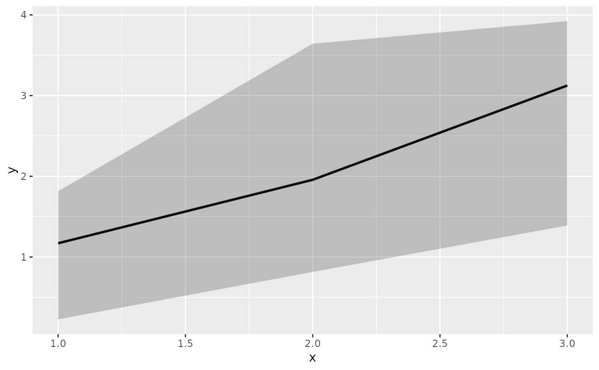

Plot data with median and percent intervals
xgx_geom_pi( mapping = NULL, data = NULL, percent_level = 0.95, geom = list("line", "ribbon"), position = "identity", fun.args = list(), na.rm = FALSE, show.legend = NA, inherit.aes = TRUE, ... )
| mapping | Set of aesthetic mappings created by `aes` or `aes_`. If specified and `inherit.aes = TRUE` (the default), it is combined with the default mapping at the top level of the plot. You must supply mapping if there is no plot mapping. |
|---|---|
| data | The data to be displayed in this layer. There are three options: If NULL, the default, the data is inherited from the plot data as specified in the call to ggplot. A data.frame, or other object, will override the plot data. All objects will be fortified to produce a data frame. See fortify for which variables will be created. A function will be called with a single argument, the plot data. The return value must be a data.frame., and will be used as the layer data. |
| percent_level | The upper or lower percentile for the percent interval (should fall between 0 and 1). The default is 0.95, which corresponds to (0.05, 0.95) interval. Supplying 0.05 would give the same result |
| geom | Use to override the default geom. Can be a list of multiple geoms, e.g. list("line","ribbon"), which is the default. |
| position | Position adjustment, either as a string, or the result of a call to a position adjustment function. |
| fun.args | Optional additional arguments passed on to the functions. |
| na.rm | If FALSE, the default, missing values are removed with a warning. If TRUE, missing values are silently removed. |
| show.legend | logical. Should this layer be included in the legends? NA, the default, includes if any aesthetics are mapped. FALSE never includes, and TRUE always includes. |
| inherit.aes | If FALSE, overrides the default aesthetics, rather than combining with them. This is most useful for helper functions that define both data and aesthetics and shouldn't inherit behaviour from the default plot specification, e.g. borders. |
| ... | other arguments passed on to layer. These are often aesthetics, used to set an aesthetic to a fixed value, like color = "red" or size = 3. They may also be parameters to the paired geom/stat. |
ggplot2 plot layer
data <- data.frame(x = rep(c(1, 2, 3), each = 20), y = rep(c(1, 2, 3), each = 20) + stats::rnorm(60)) ggplot2::ggplot(data, ggplot2::aes(x = x, y = y)) + xgx_geom_pi(percent_level = 0.95)